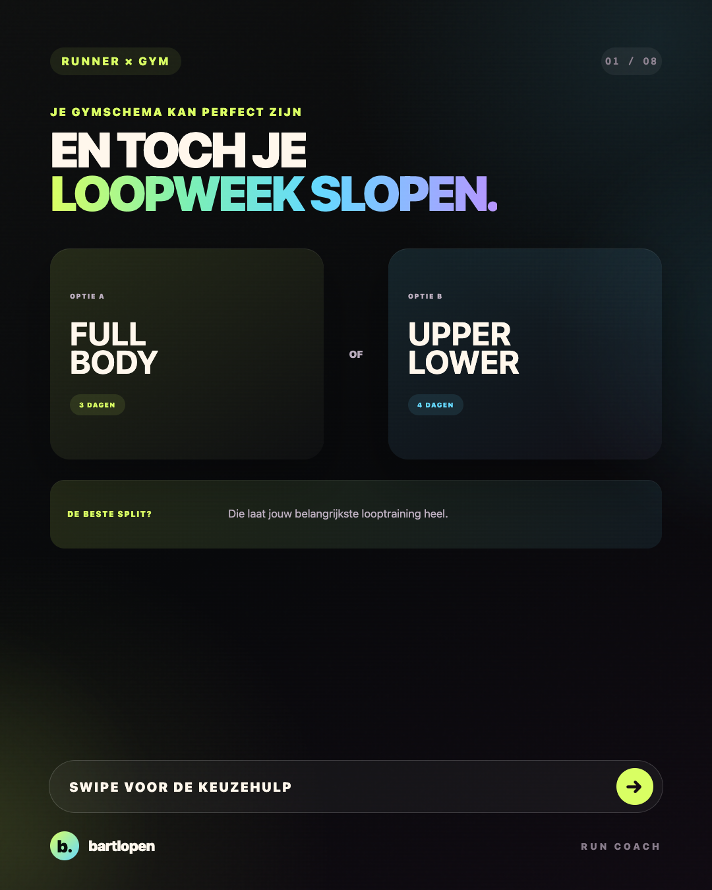
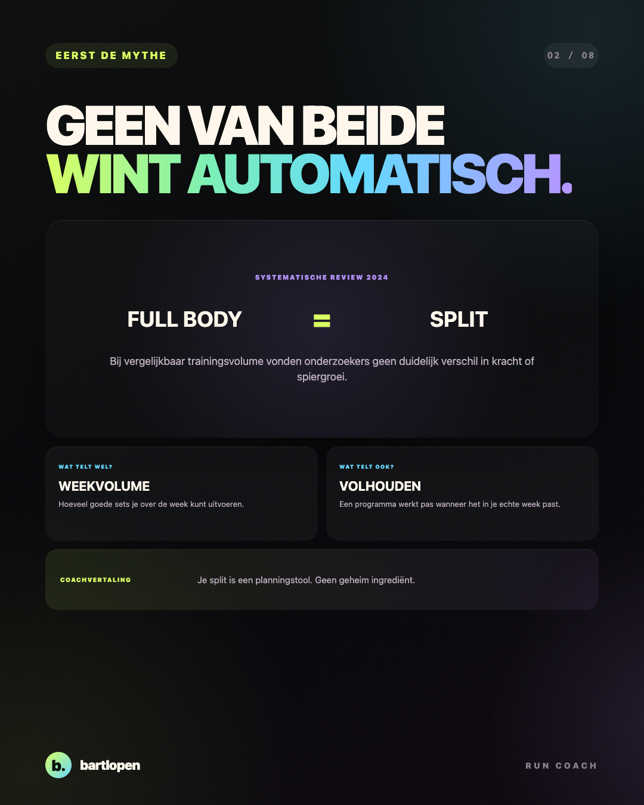
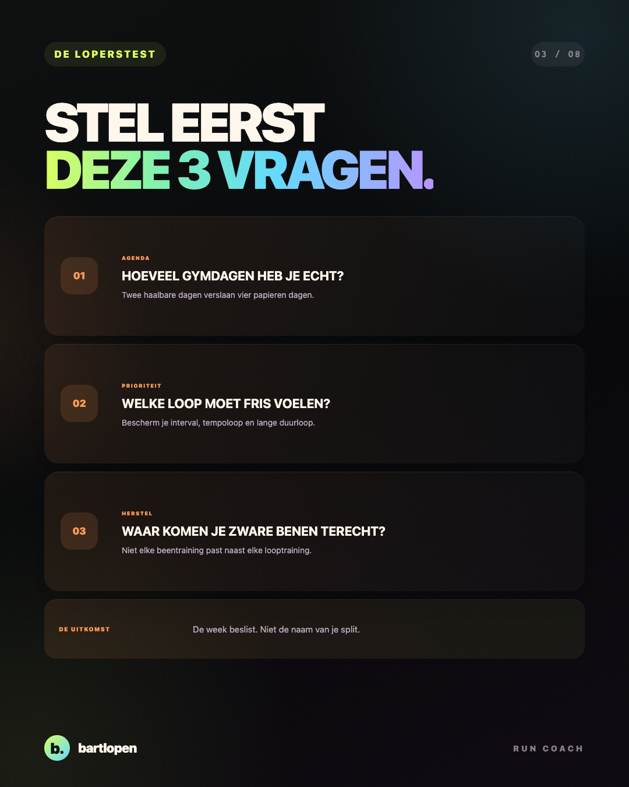
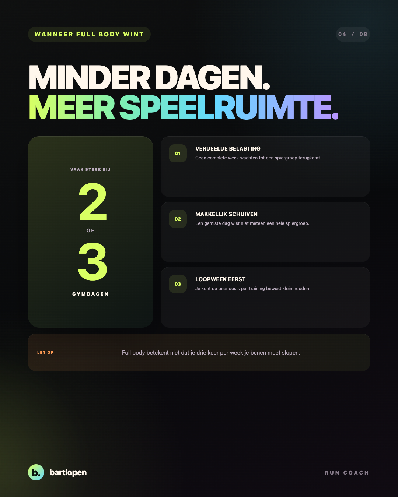
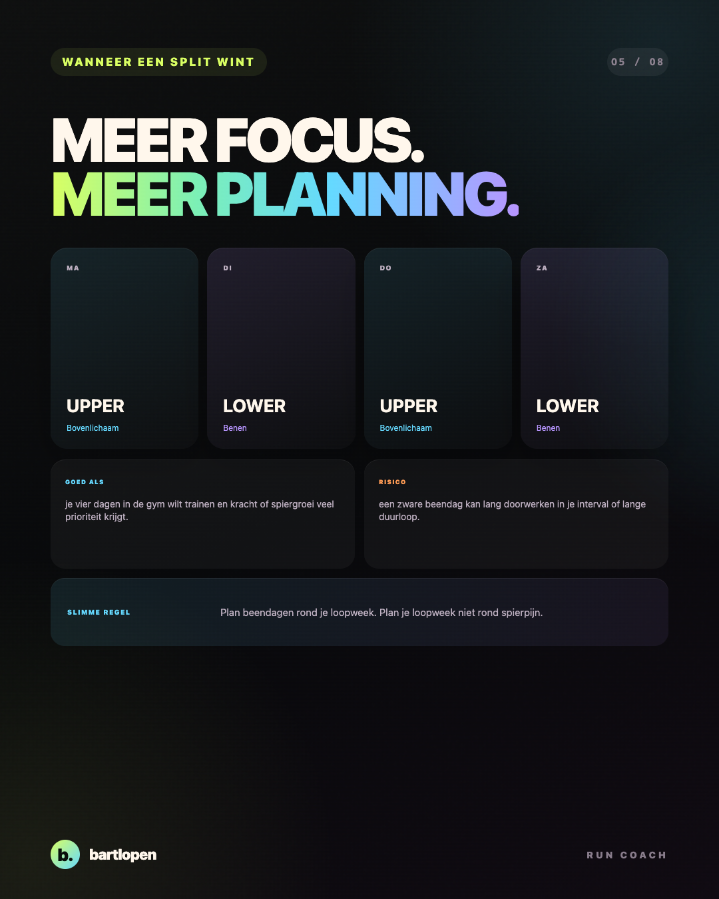
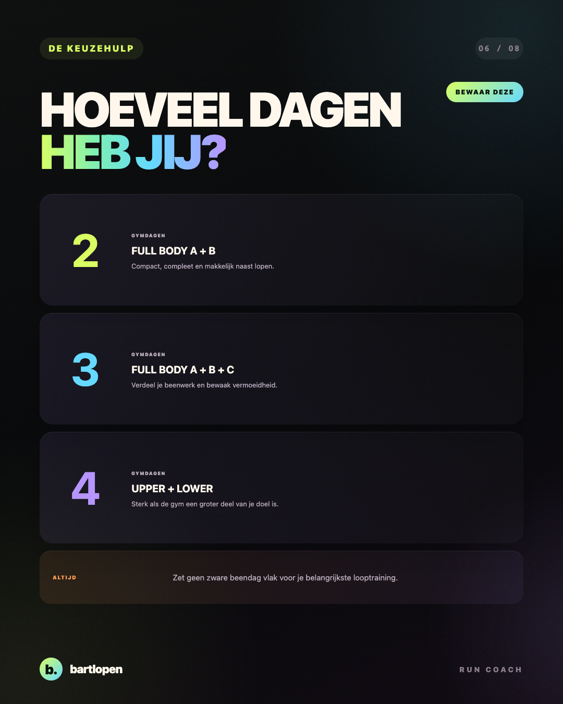
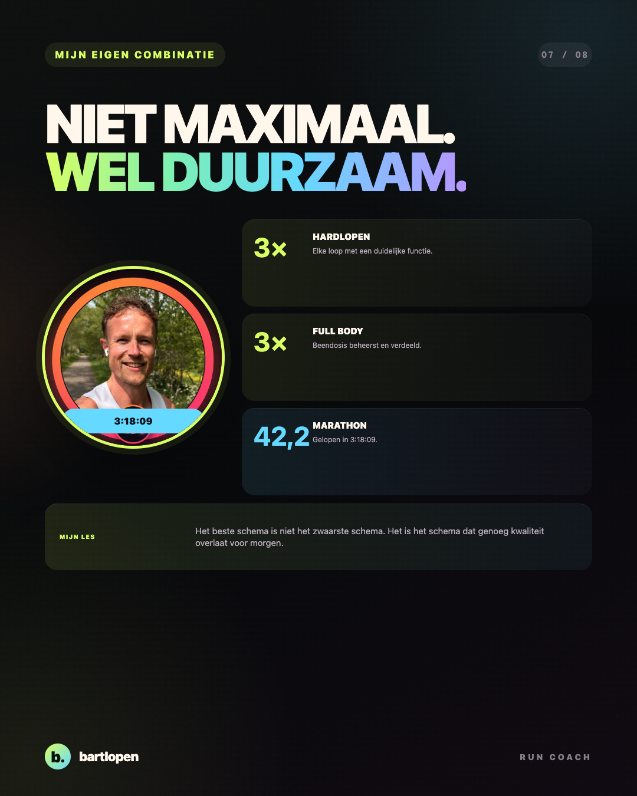
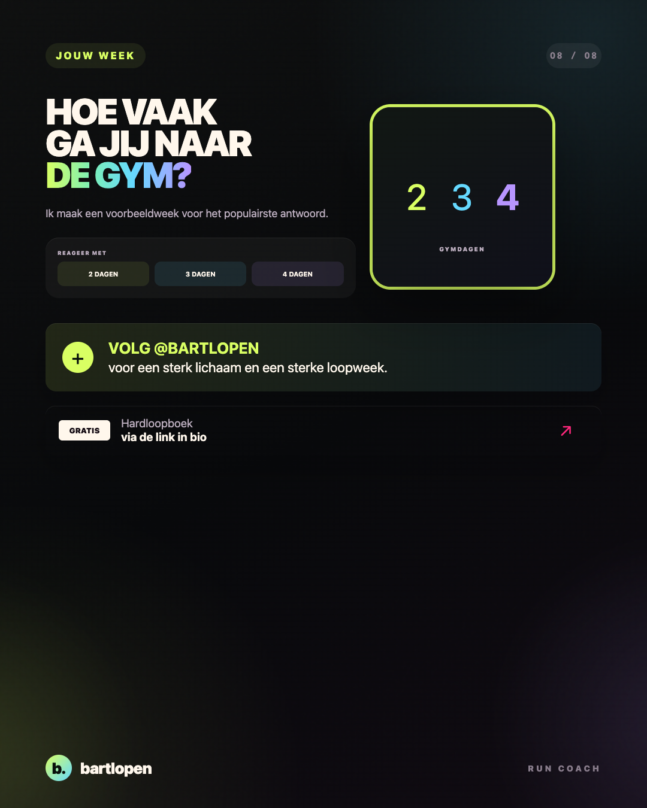

SLIDE 01 ↗Full body
of split?
Acht praktische slides om je krachttraining te laten passen bij je loopweek, in plaats van andersom.

SLIDE 02 ↗
SLIDE 03 ↗
SLIDE 04 ↗
SLIDE 05 ↗
SLIDE 06 ↗
SLIDE 07 ↗
SLIDE 08 ↗Caption
FULL BODY OF SPLIT ALS JE OOK HARDLOOPT? 👀 De beste keuze staat niet alleen in je gymschema. Hij staat in je hele trainingsweek. Onderzoek laat zien dat full body en een split vergelijkbare resultaten kunnen geven voor kracht en spiergroei wanneer het trainingsvolume vergelijkbaar is. Voor een loper wordt daarom een andere vraag belangrijker: welke indeling laat genoeg kwaliteit over voor je interval, tempoloop en lange duurloop? Mijn snelle keuzehulp: 2️⃣ gymdagen: full body A + B 3️⃣ gymdagen: full body A + B + C 4️⃣ gymdagen en veel focus op kracht: upper + lower kan sterk werken Mijn eigen combinatie richting mijn marathon van 3:18:09 was drie keer hardlopen en drie keer full body. Niet maximaal slopen, wel slim genoeg doseren om de volgende training goed te kunnen uitvoeren. Hoe vaak ga jij naar de gym: 2, 3 of 4 dagen per week? 👇 #hardlopen #krachttraining #fullbody #hybridtraining #marathontraining #runningtips #bartlopen
Bronnen: een systematische review naar full body en splitschema's, een meta-analyse naar krachttraining en loopeconomie en een meta-analyse naar gecombineerde kracht- en duurtraining.